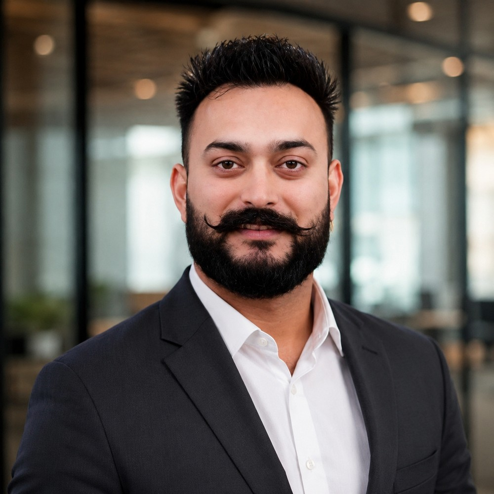

Garry SinghSenior Project Manager based in Brampton, Ontario — ten years moving from technical support into requirements, delivery, and digital transformation work across fintech, insurance, retail, and telecom.
The three things that show up consistently across every project I've run.
I trace changes to every downstream system, not just the fields named in the request — that's usually where the real risk hides.
Clear, current reporting on what's validated versus pending, so decisions get made on the actual state of the project.
When the existing system can't do what's needed, I design around it — scoped, budgeted, and approved, not a costly rebuild.
I manage IT initiatives end to end — from the first conversation about a business problem, through requirements, planning, development, testing, and implementation. Most of my work sits at the intersection of business analysis and delivery: I write the BRDs and user stories, but I also run the sprint planning and carry the risk log.
Recent work has centered on digital transformation — AI-enabled onboarding, self-service platforms, automation, and large-scale data migration — for organizations that needed to modernize a process without breaking what already worked for their customers.
My path started in technical support, moved through business analysis, and led here. It means I understand both what a business actually needs and what it takes to build and ship it.
Patterns that show up across every initiative I've run, regardless of industry.
Get stakeholders agreeing on scope, risk tolerance, and priorities before development starts — not after the first change request. Fewer surprises later, less rework.
Compare the cost, timeline, and maintenance burden of a few solution paths before committing to the biggest build available. The right-sized answer usually ships faster.
Check every downstream system and reference table connected to a change, not just the fields named in the original request. That's usually where the real risk hides.
Give steering committees a clear, current view of what's validated versus pending, so decisions get made on the actual state of the project, not last week's version of it.
Ten years, seven roles, one throughline — moving progressively closer to owning delivery.
Four initiatives delivered as IT Project Manager, each framed the way I scope real work — problem, solution, goal.
Click through each project for the timeline, the numbers, and the call that mattered most.
Won unanimous approval for a phased migration over a risky big-bang cutover, caught serious data issues in mock migrations before any real customer was affected, brought real end users into UAT, and turned the go-live retrospective into permanent process changes.
Built a data-backed case that won a leaner $300K build over a $900K+ alternative, delivering in under five months.
Designed a hybrid workaround for a platform limitation and turned the most resistant frontline agents into advocates.
Aligned Compliance, Product, and Risk on a shared framework before development, avoiding rework later.
Core strengths first, then the wider toolkit built up across delivery, analysis, and support.